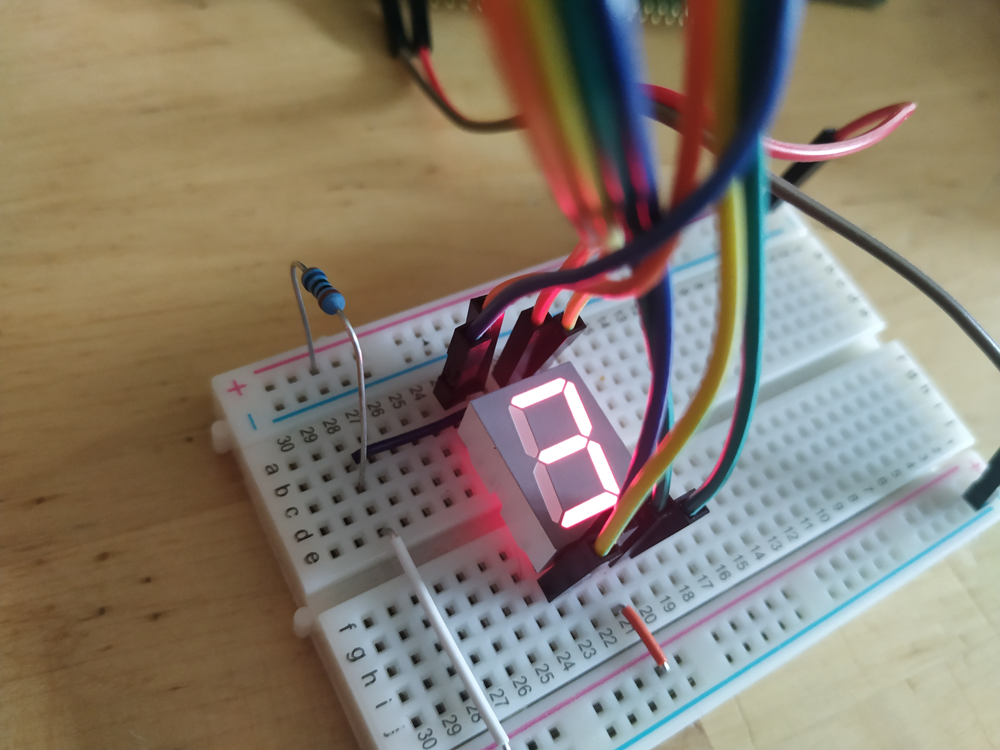
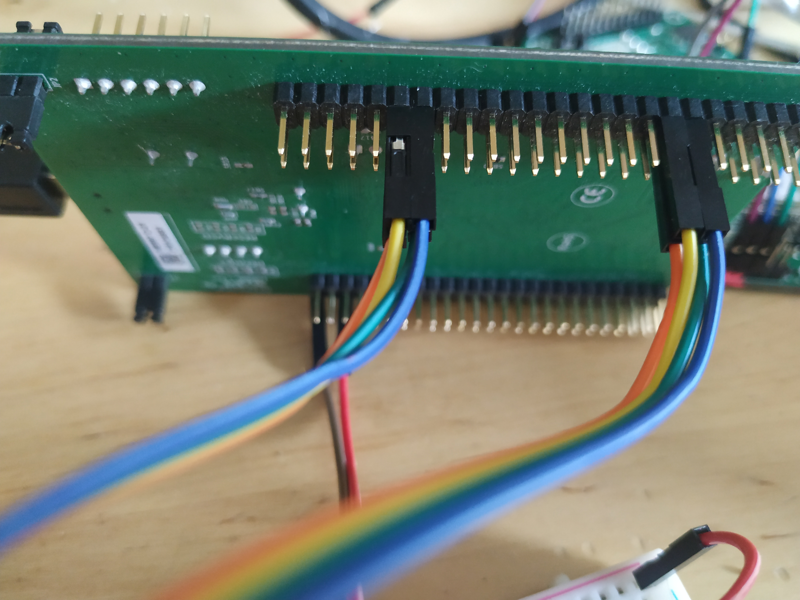

First I think a bit of disclaimer may be in place. I am not an electrical engineer or an expert in electronics in any way. I enjoy learning and would like to do that together with others. This is why I share my naive experimentation into the field of electronics. So please do not take what I write as an experts guide. Always do your own research and read datasheets. I would love to hear your feedback, help, constructive criticism and tips, that would be awesome!
I have a number of different sensors, displays and servos just sitting around. I will try to figure out how they work and write down my findings. This first one was not very tricky (but not without its caveats) it is a seven-segment display. This particular seven-segment display has a decimal point and thus have eight input pins. The approach taken here will be to connect each of those pins to GPIO pins on the STM32F4-Discovery board as below.


This approach is taken because I currently do not have any seven-segment decoder chip but still want to see if it will light up. When I get my hand on some decoder chips I will revisit this setup. This setup really does not feel ideal.
This seven-segment display has a common anode and one cathode per segment LED. I hope I am not mixing up the anode and cathode words there but what it means is that I am connecting positive (+) 3V to the anode pins. There are two anode pins and it seems to not matter at all which one I use, so I connect 3V via a 365 Ohm resistor to both of them. The anode pins are located in the middle of the top and bottom row of 5 pins, that is pin 3 and pin 8. The seven-segment display used here does not seem to require very much current at all to light up. Unfortunately I have no manufacturer information or model number of the display so it is hard to look up a datasheet.
Eight pins are unconnected so far. These eight pins, each turn a segment LED if you connect that pin to ground. That feels a bit awkward since I want to be able to turn the segments on using the STM32 MCU. and that would mean sinking the current through the seven-segment display circuit into the GPIO pins of the MCU. From the datasheet the maximum current we can sink into a GPIO pin is 25mA. Given the 365 Ohm resistor between the 3V supply and the anode, the current can not be higher than about 8.3 mA, which is well below the 25mA but still seems to be quite enough to light up the LEDs in the display so that they are visible even in a lit room. The way it is setup with a common anode, current limited with a resistor, the more of the LEDs turned on, the dimmer they become.
The Seven-segment display is connected to the STM32 at pins PA 0, 1, 2 and 3 and to PB 11, 12, 13, and 14. I think it makes sense to configure these as PAL_MODE_OPENDRAIN which as I understand it means that the pins will "float" (essentially act as unconnected) when you assert high (1) on them. Asserting a low (0) will mean the pin is pulled to ground.
palSetGroupMode(GPIOA, PAL_GROUP_MASK(4), 0, PAL_MODE_OUTPUT_OPENDRAIN);
palSetGroupMode(GPIOB, PAL_GROUP_MASK(4), 11, PAL_MODE_OUTPUT_OPENDRAIN);The palSetGroupMode function used above changes the mode of a collection of GPIOs via a mask and a shift. The PAL_GROUP_MASK(4) function creates a mask with the 4 LSB set to 1, the shift distance (0 and 11) then moves this group of 1-bits to the position correlating with out GPIO A B pins.
We can also write to these GPIOs in groups.
void setSevenSegment(uint8_t pat) {
palWriteGroup(GPIOA, PAL_GROUP_MASK(4), 0, ~pat);
palWriteGroup(GPIOB, PAL_GROUP_MASK(4), 11, ~pat >> 4);
}The setSevenSegment function takes a byte called pat where the containing ones for the leds to turn on. Since the LEDs will be active low, this pat is bitwise inverted. Now we can write the least significant 4 bits of pat to the GPIOA pins and the most significant 4 bits to the GPIOB pins using palWriteGroup.
So now we have configured the GPIOs and we have a function for turning on arbitrary combinations of LEDs within the seven-segment display. To display numbers we need a set of codes that correspond to the shapes that represents numbers on the display.
The list of numbers above are bit patterns that represent 0 - 9. What codes to use of course corresponds to how you wire up the display! But I chose a wiring that corresponded to a code (a code found on the web) rather then the other way around, to chose a code corresponding to the wiring.
Below you find a complete ChibiOs based program that just counts 0-9 repeatedly and showing the digits on the display.
#include "ch.h"
#include "hal.h"
uint8_t ssCodes[10] = { 0x3f, 0x06, 0x5b, 0x4f, 0x66, 0x6d, 0x7d, 0x07, 0x7f, 0x6f };
void setSevenSegment(uint8_t pat) {
palWriteGroup(GPIOA, PAL_GROUP_MASK(4), 0, ~pat);
palWriteGroup(GPIOB, PAL_GROUP_MASK(4), 11, ~pat >> 4);
}
int main(void) {
halInit();
chSysInit();
palSetGroupMode(GPIOA, PAL_GROUP_MASK(4), 0, PAL_MODE_OUTPUT_OPENDRAIN);
palSetGroupMode(GPIOB, PAL_GROUP_MASK(4), 11, PAL_MODE_OUTPUT_OPENDRAIN);
uint8_t i = 0;
while(true) {
setSevenSegment(ssCodes[i]);
chThdSleepMilliseconds(250);
i ++;
if (i >= 10) i = 0;
}
}Wow. It is actually quite interesting how tricky even simple things become when they are in border-zone of electronics and software. How insecure I get when doing things like this is a clear indication that there is a lot left to learn.
It feels a bit wonky to hook something up like this and sink current through the GPIO pins, but maybe it is fine? the board has been running here next to me repeatedly counting from 0 - 9 all day today, while I have doing my day-job, and all seems fine ;)
I want to revisit this after getting my hands on some seven-segment display decoders but that will have to wait until after pay-day.
Thanks for reading and have a good day!
Please contact me with questions, suggestions or feedback at blog (dot) joel (dot) svensson (at) gmail (dot) com or join the google group .
© Copyright 2020 Bo Joel Svensson
This page was generated using Pandoc.